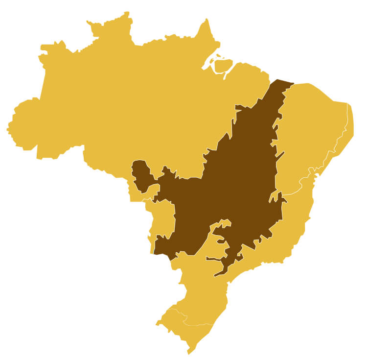
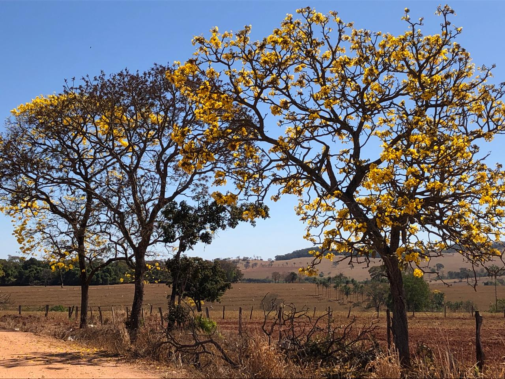
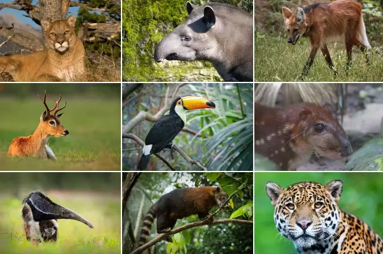
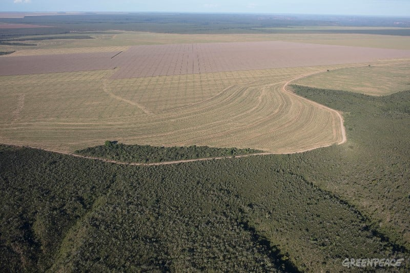
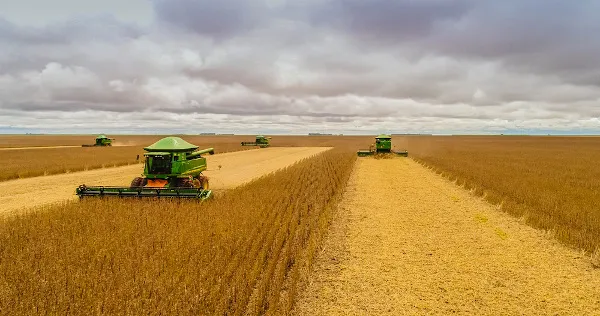

O que é o Cerrado?
O Cerrado é um bioma caracterizado por uma vegetação de savana, que inclui uma mistura de árvores baixas, arbustos e gramíneas. Localizado predominantemente no Brasil Central, o Cerrado abrange áreas dos estados de Goiás, Mato Grosso, Mato Grosso do Sul, Minas Gerais, Bahia, Tocantins e Distrito Federal. O clima é tropical com uma estação seca bem definida, e a vegetação é adaptada para lidar com períodos prolongados de seca.
Flora do Cerrado
A flora do Cerrado é extremamente diversificada e adaptada ao clima seco e ao solo pobre em nutrientes. Entre as espécies mais conhecidas estão:
- Pequizeiro (Caryocar brasiliense): Uma árvore nativa que produz o pequi, um fruto muito apreciado na culinária local.
- Ipê (Tabebuia spp.): Conhecido por suas flores coloridas que variam entre amarelo, rosa e roxo.
- Cactáceas e Bromélias: Plantas que ajudam a manter a biodiversidade do bioma e adaptam-se bem ao ambiente árido.
Fauna do Cerrado
A fauna do Cerrado é rica e diversificada. Entre os animais mais emblemáticos estão:
- Lobo-guará (Chrysocyon brachyurus): Um dos maiores canídeos nativos do Brasil.
- Anta (Tapirus terrestris): O maior mamífero terrestre da América do Sul.
- Tamanduá-bandeira (Myrmecophaga tridactyla): Conhecido por sua longa língua e hábitos alimentares de formigas e cupins.
Desafios e Conservação
O Cerrado enfrenta diversos desafios, como o desmatamento, a expansão agrícola e as mudanças climáticas. A conservação desse bioma é crucial para manter a biodiversidade e os serviços e cossistêmicos que ele oferece. Diversas iniciativas estão em andamento para proteger o Cerrado e promover o uso sustentável dos seus recursos.
Economia
Com mais de 1 milhão de imóveis rurais de pequeno, médio e grande porte, o Cerrado é um importante produtor de alimentos, fibras e energia, com elevadas contribuições na produção nacional de algodão (86%), sorgo (83%), soja (50%), milho (49%), feijão (43%), cana-de-açúcar (36%) e carne (34%).
Fontes
Embrapa
Brasilescola
WWF Brasil